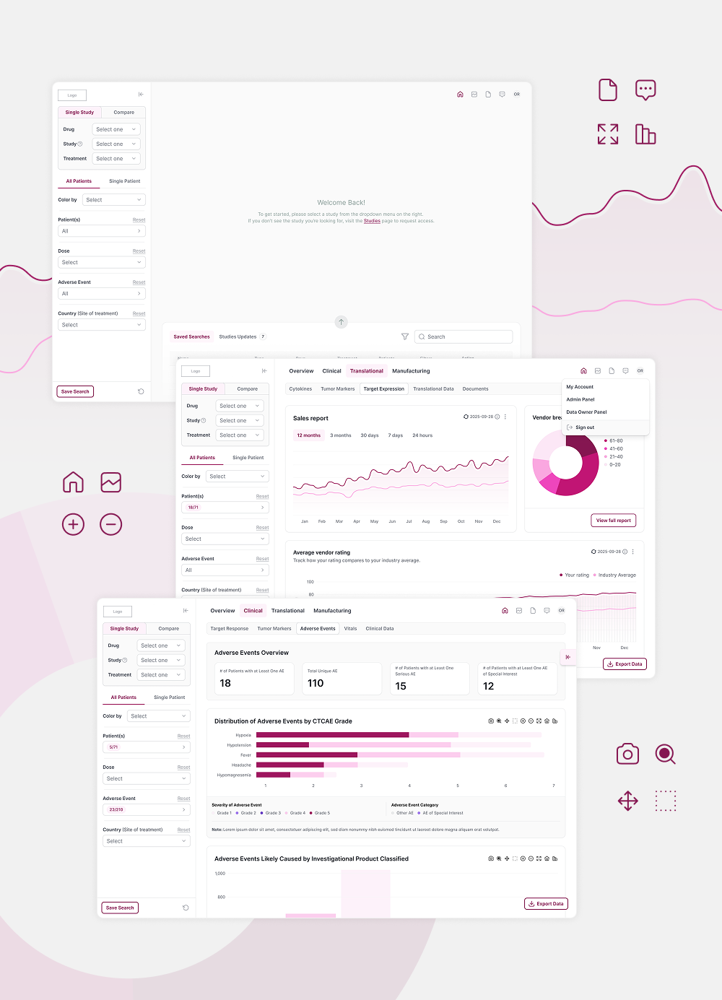

Directed the creative vision and UX/UI design for an enterprise data platform that transforms complex research data into clear, actionable insights. Led the development of the visual language, design system, and overall user experience, ensuring a cohesive and scalable product across multiple touchpoints. Partnered with product, engineering, and subject matter experts to translate complex requirements into intuitive interfaces, balancing functional depth with visual clarity. The work focused on elevating data storytelling through thoughtful interaction design, information hierarchy, and accessible visualizations, resulting in a seamless experience that supported collaboration, faster decision-making, and long-term product scalability.
